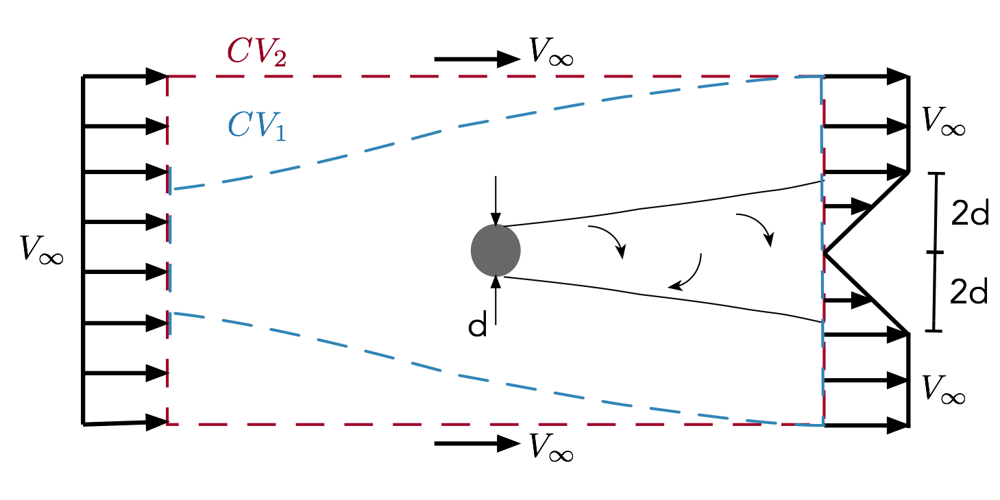

HW 1: Fundamentals
due 1/31/2018 before midnight via Learning Suite 75 possible points
-
Control Volume Analysis. Determine the drag of a cylinder in a very large wind tunnel (so that we can ignore wall effects). Effectively the flow is unconfined. The Reynolds number is large enough such that the wake width is reasonably steady. One approach to determine the drag is to use a force-balance. An alternative approach is to use a wake-survey. In this approach we just need to measure the velocity profile in the wake. You should assume 2-dimensional, incompressible flow with the wake velocity profile shown below:

What is the drag coefficient of the cylinder based on projected area (i.e., 2D drag coefficient based on diameter)? Is this a reasonable value (why or why not)? Solve the problem using one of the two control volumes shown above: 1) a control volume that follows streamlines (blue volume \(CV_1\)), or 2) a rectangular control volume (red volume \(CV_2\)).
-
Control Volume Analysis. Consider the side view of propeller and bounding streamlines below. Use a quasi-one-dimensional approximation (i.e., assume that the velocity is uniform across each circular cross-section), and also assume that the flow is incompressible. Station 1 is far upstream, station 2 is just in front of the rotor disk, station 3 is just behind the rotor disk, and station 4 is far downstream. The freestream velocity at disk 1 is \(V_\infty\). The velocity at station 2 will be higher than freestream: \(V_2 = V_\infty + u\) where \(u\) is some unknown velocity increment. By convention, we define a nondimensional number called the axial induction factor, which is the ratio of this velocity increment to the freestream velocity: \(a = u/V_\infty\). In terms of \(a\), the velocity at station 2 is thus \(V_2 = V_\infty(1 + a)\) (by definition). Complete the following:

- Find a expression for the far-field velocity \(V_4\) in terms of \(V_\infty\) and \(a\) (note: the same behavior occurs for the downwash of a lifting wing). You may need to use more than one control volume to solve this problem.
- Derive an expression for the thrust coefficient (normalized by the freestream dynamic pressure and the disk area) in terms of \(a\).
-
Derive an expression for the induced (or propulsive) efficiency in terms of \(a\). The induced efficiency is an ideal efficiency, that ignores viscous flow losses and rotational energy losses. Efficiency is \(P_{out}/P_{in}\). There are various derivations out there for efficiency. All lead to the same result, but some of are quite hand-wavy. A clear approach is to use a reference frame fixed to the ground with the propeller moving by at \(V_\infty\). The useful power extracted by the propeller is \(T V_\infty\). The total power into the system, is that into the propeller \(T V_\infty\) plus that left in the kinetic energy of the wake: \(\frac{1}{2}\dot{m}(V_4 - V_\infty)^2\) Thus:
\[\eta = \frac{T V_\infty}{T V_\infty + \frac{1}{2}\dot{m}(V_4 - V_\infty)^2}\] - Draw (qualitatively) the velocity and pressure distribution along the axis from station 1 to station 4 and explain the behavior.
-
CFD.
Background (optional, as much as needed):
- Complete this guided tutorial for an airfoil analysis and validation with StarCCM+. Note that step 17 should read Wing (not Domain).
- Read the best practices guide for incompressible aerodynamics in StarCCM+.
- Watch these videos on our resources page: Import 3D curve, Create 2D mesh, and Meshing.
Actual problem (required):
Perform a grid convergence study for an inviscid airfoil analysis. You can use the same setup as in the tutorial, or pick a different airfoil and freestream conditions if you like. Turn in a plot showing convergence in lift coefficient and drag coefficient (separate plots) as a function of some mesh parameter (e.g., base size, number of cells, etc.).
-
Potential Flow. Vortex rings are pretty interesting. Read this wikipedia article to get an idea of what they are. They can propel themselves quite far when moving through a quiescent fluid. See some fun videos of vortex rings formed by a volcano, dolphins, and a plate in a pool. They can also be dangerous, for example with helicopters that descend too quickly (skip to 1:15).
If you’re really careful, and put one vortex ring right behind another you can have leapfrogging vortices! Check out this video of a real-life visualization of the phenomenon, a 2D simulation, and a neat 3D simulation.
We are going to simulate the leapfrogging vortices in 2D. If you picture a toroidal vortex intersecting a 2D plane you will have two vortices (like the left pair shown below). From our understanding of vortices we can see how it is self-propelling. Consider the left pair of vortices (e.g., one ring vortex). The top vortex induces a velocity on the bottom vortex towards the right. Simultaneously, the top vortex induces a velocity on the top vortex to the right. Thus, it pushes itself forward. With two vortices next to each other, things become even more interesting.
In this example, make all vortices of equal strength (\(\Gamma\)). Each vortex is free to move, and would move with the local fluid velocity. Plot the trajectory of each vortex. You need to use a small enough time step to ensure stability. You may need to try smaller time steps to make sure that your simulation is accurate.

If you just look at trajectories it is hard to tell that they are leapfrogging. Though not required, you might like to create an animation so that you can actually watch the movement in time. You might also like to draw a line between the vortex pairs to better visualize them as a connected ring.